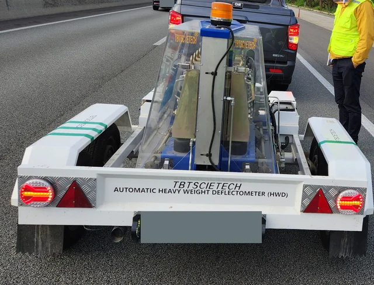
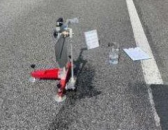

개인 참여: 2023–2024 · 현장 측정 지원 · 과제 문서화
배수성 포장 현장 공용성능
공용 중인 배수성 포장의 성능을 어떻게 측정하는가?
연구 목적
호남선 정읍–태인 배수성 아스팔트 포장 시험시공 구간의 현장 공용성능을 추적조사한 과제입니다. 전체 과제기간은 2021–2024년이며, 본인 참여기간은 2023–2024년입니다.
본인 기여
- 현장 투수성 및 미끄럼저항 측정을 지원했습니다.
- 낙하추식 처짐측정기(FWD) 시험을 지원했습니다.
- 기술보고와 과제 문서화에 기여했습니다.

공용 중 포장의 현장 투수 측정
수두관과 시간 계측으로 배수성 포장 시험 구간의 투수성을 측정하는 장면입니다.
방법과 연구 과정
- 01현장 측점
- 02장치 배치
- 03측정·문서화
투수성, 미끄럼 저항과 포장 처짐은 공용 중인 포장의 서로 다른 성능을 보여줍니다. 사진에는 투수시험 장치, 진자식 미끄럼 저항 시험장치와 FWD 현장 장비가 담겨 있습니다.
현장시험 사진
투수성·미끄럼 저항·FWD 측정을 지원하고 조사 기록과 기술보고서 작성에 참여했습니다.


FWD 현장시험
배수성 아스팔트 포장 추적조사에 사용한 견인형 현장시험 장비.


미끄럼 저항 측정
현장 추적조사 사진집에 기록된 진자식 시험장치.
연구 기여와 결과물
서로 다른 현장 측정을 지원하고 시험시공 구간의 추적조사 내용을 기술보고와 과제 문서로 연결했습니다.
더 많은 시험·과정 사진

HWD 표기의 현장 처짐 측정 장비
현장 조사 과정의 트레일러형 낙하하중 처짐 장비로, 장비에는 HWD라고 표기되어 있습니다. 얼굴과 식별 정보는 가렸으며 하중 크기, 재하 순간 또는 개인 역할을 확정하지 않습니다.

진자식 미끄럼 저항 시험
포장면에서 수행하는 진자식 미끄럼 저항 시험. 얼굴과 차량 번호판을 가렸으며 BPN 결과나 작업자의 신원은 사진으로 확정하지 않습니다.

BPT 미끄럼저항 · 2
현장에서 사용하는 진자식 미끄럼저항 시험 장비. 작업자의 얼굴과 보이는 차량 식별 정보는 가렸습니다. 대표 BPN 값, 제동거리 또는 개인 역할은 이 사진으로 확정하지 않습니다.